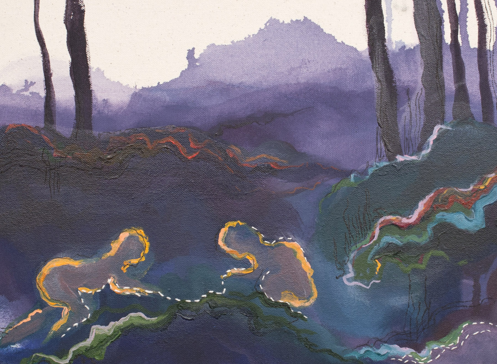
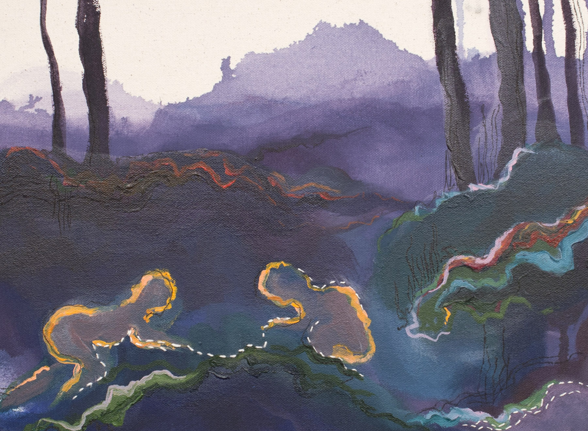

This image looks super neat.
 

About Me:
Alicia Hofland obtained a Bachelor of Fine Arts, with a specialization in painting and drawing, from University of Ottawa in 2017, and upon graduating, was awarded the Edmund and Isobel Ryan Visual Arts Scholarship for excellence in painting. Since graduating, she has shown her work in various institutions around Ottawa and Toronto, and has work displayed in various private collections across Ontario. She currently works part time at Being Studio as a Studio Facilitator, and is recovering from a traumatic brain injury obtained in 2018.
Statement:
Through a variety of painting and drawing materials, I explore the flaws in our own personal experiences of memory, and how those transgressions are doubled within a relationship. The patchiness of recalling our pasts become woven together, creating an atmosphere by the combined narratives exchanged within the relationship. By focusing on the role memory plays within my own long term relationships, I point to the universal experience of the endlessly changing past, the importance our relationships have on those reflections, and how our changing memory is expressed in our perception of the future.
Contact Me
Please email me or reach out on social media for more information.